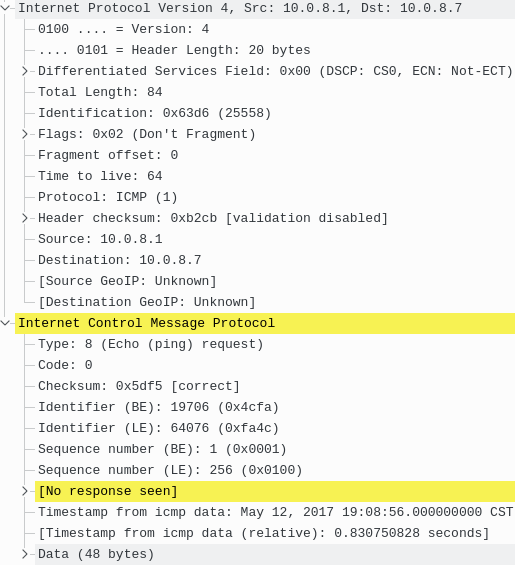
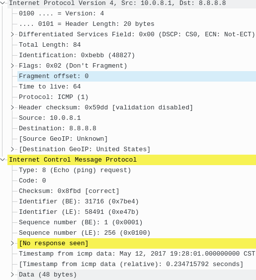

Preface
通过这些天的研究和各种资料的查阅，终于对路由以及 Linux 的 Tunnel 设备有个大致的了解了。
先说路由，然后再带着路由的知识谈 tun 设备。
路由（Route）
运行命令 route -n 将得到如下输出：
1 | Kernel IP routing table |
只看 Destination Gateway Genmask Iface 这4列就够了，下面将对这4列的含义一一进行解释。
- Destination:
数据包想要去的目的地，需要和 Netmask 配合使用。 - Genmask（Netmask）:
与 Destination 配合使用，稍后会举例子。
注意： 后面我将使用 Netmask 一词来代替 Genmask（According to Reference #1）。 - Gateway:
数据包想要到达目的地的话，需要从这个地址出去，也就是数据包的出入口。需要和 Iface 配合来确定一个唯一的出口。 - Iface:
全称 Interface，其实指的是具体的设备，比如这里的wlan0就是无线网卡。
IPv4 地址格式科普
IPv4 地址总长 32 bit，每 8 bit 为一组。如果每个 bit 都是 1 的话：
1 | 11111111.11111111.11111111.11111111 |
再拿 OpenDNS 的 resolver1.opendns.com 的 IP 地址为例:
1 | 208 . 67 . 222 . 222 |
Destination & Netmask
Netmask，中文译名为 子网掩码。把单词拆成 net 和 mask 就能更好的理解了。前面提到 Destination 需要和 Netmask 配合使用，配合的方式也很有意思。下面将以上面输出的第3条（也就是 10.0.8.0）为例：
首先将 Destination 也就是
10.0.8.0转换成二进制的格式：1
210 . 0 . 8 . 0
00001010.00000000.00001000.00000000再将 Netmask 转换成二进制的格式：
1
2255 . 255 . 255 . 0
11111111.11111111.11111111.00000000然后把它们放在一起
1
2
3
4
510 . 0 . 8 . 0
00001010.00000000.00001000.00000000
11111111.11111111.11111111.00000000
255 . 255 . 255 . 0Netmask 的是用来给网络分片儿的，用它把 IP 地址 “mask” 一下（就是
bit and操作），然后就只剩下后面的 8bit00000000了。除去0和255这两个广播地址，现在剩下了[1 - 254]这些地址可用。
下面来解释一下这么做的用途。
解释几个路由的例子
下面来解释上面的5条里前3条路由信息的具体意思，后2条通过下面的解释自己就能猜出来了：
dst: 10.0.8.0, gateway: 0.0.0.0, mask: 255.255.255.0, iface: tun0
去往10.0.8.0的数据包请通过tun0设备发往网关0.0.0.0。 Gateway 为0.0.0.0的话，意思就是 不需要通过任何 Gateway （或者说 任何路由器）该数据包就能直接到达10.0.8.0。 Netmask 在这里意味着：去往10.0.8.1 ~ 10.0.8.254的包都行。dst: 8.8.8.8, gateway: 192.168.1.1, mask: 255.255.255.255, iface: wlan0
去往8.8.8.8的数据包请通过wlan0设备发往网关192.168.1.1。 Netmask 在这里将指定一个确切的地址8.8.8.8，也就是 只有去往8.8.8.8的包才行。dst: 0.0.0.0, gateway: 192.168.1.1, mask: 0.0.0.0, iface: wlan0
去往任意地点的数据包请通过wlan0设备发往网关192.168.1.1。 其实这条路由记录代表着 某个数据包没有任何可（相比之下）精确匹配的路由的时候 才使用这个路由，也就是所谓的 “默认路由”。
其实到这里我觉得还是解释得不够清楚，请阅读 serverfault.com 的这个答案 后 再来看这小节，应该就能完全明白了。
Netmask 的简化写法
比如还是这个：
1 | 10 . 0 . 8 . 0 |
上面的 IP 地址和 Netmask 可以简化成这样：10.0.8.0/24，24 就是 255.255.255.0 转换成二进制后 11111111.11111111.11111111.00000000 的 1 的数量。
tun 设备
这个不叫 “豚设备”，tun 是 Tunnel 的简称，所以叫 通道设备。
Peer-to-Peer / Point-to-Point
Peer to Peer：端对端，从一头到另一头
Point to Point：点对点，从一点到另一点
A peer to peer connection, would be like my computer to your computer, with lots of hosts in between, a point to point connection would be like between 2 directly connected routers with no other hosts in between.
端对端连接就如同我的电脑到你的电脑，（这条路上）会经过很多主机（译者注：大多情况下是路由器之类的）。点对点连接就如同两个路由器直接连接起来，中间没有任何其他的主机。
什么是 tun 设备
现实生活中有许多通道的实现，比如 隧道 管道 下水道。Linux 的 tun 就是一种通道的实现，相比现实生活中的通道的实现，Linux 的 tun 设备的样子则比较简单：
- 一个入口，一个出口
- 从入口可以到达出口，从出口也能到达入口
一个程序操作 tun 设备，那这个程序在 tun 的哪一边呢?
这个问题困扰了有一个多星期（从上一篇 blog 发布之前就是）。其实最开始我是这样想的：别的程序往 tun 的一头写数据，我的程序从另一头读数据。没错，的确是这样。但后来我通过仔细的研究和了解之后，才敢把这个结论写出来。
Destination Address 是什么
python-pytun 这库可以仅通过几行代码就可以创建一个 tun 设备，在启动 tun 设备之前需要配置几个参数：
1 | tun = pytun.TunTapDevice("tun0", pytun.IFF_TUN | pytun.IFF_NO_PI) |
创建设备后执行命令 ifconfig 看到了这样的输出：
1 | tun0 Link encap:UNSPEC HWaddr 00-00-00-00-00-00-00-00-00-00-00-00-00-00-00-00 |
inet addr 这个代表的是这个 tunnel 的入口的地址，那那个 P-t-P 地址是做什么用的？
经过查阅许多资料后（其中包括 StackOverflow 上的这个问题）才明白，P-t-P 地址是用来将一个 tunnel 连接到另一个 tunnel 用的，也就是 P-t-P 的意思就是 “Point to Point”。不过现在已经用不上这个了（因为有 Peer-to-Peer 并且 路由器技术也成熟了），但为了兼容性仍然保留这个参数。
ping 到哪儿了
执行命令 ping 10.0.8.7，按照路由表里的记录 dst: 10.0.8.0, gateway: 0.0.0.0, netmask: 255.255.255.0, dev: tun0，这个 ICMP echo-request（也就是 ping 请求包）应该发到 10.0.8.7 了，但是 Wireshark 抓包显示 这个ping没有收到 ICMP echo-response（也就是 ping 的响应包）。那这个 ping 包去哪儿了？黑洞？

后来我才反应过来，既然是 tun 设备，那这个包从 10.0.8.1 发往 10.0.8.7 的路径应该是 包到了通道的出口然后被我的程序收到，但我的程序未做任何处理，相当于直接丢掉包了。
本意上我想 ping 这个网段里的 10.0.8.7，但实际情况不是这样。这个 ping 包 ping 的不是 tun0 的 10.0.8.0/24 网段里的客户端，而是希望通过出口发往点对点的另一端的 10.0.8.0/24 网段里的 10.0.8.7。
这样的话，ping 丢包的问题 和 destination address 的意义就能互相解释通了。
截获整个系统的 IP 包
既然 tun 设备的模型以及工作方式都清楚了，那就好办了，几条命令就能解决：
1 | sudo route -n # 把默认路由记录记下来，比如是 "gateway: 192.168.1.1, iface: wlan0" |
1 | Destination Gateway Genmask Flags Metric Ref Use Iface |
上面的路由表翻译出来就是：数据包将默认通过 tun0 设备发往 10.0.8.2 地址，10.0.8.0 这条路由接收来自 10.0.8.2 的包，这样就能把整个系统发往外面的包都拦截了。ping 8.8.8.8 效果如下图：

要想恢复默认路由的话，执行下面的命令：
1 | sudo route del default |
更新历史
12 May 2017: 首次发布
2 Jun 2017:
- 更正:
wlan0设备不拥有192.168.1.1这个地址，而是将包发往192.168.1.1这个网关.